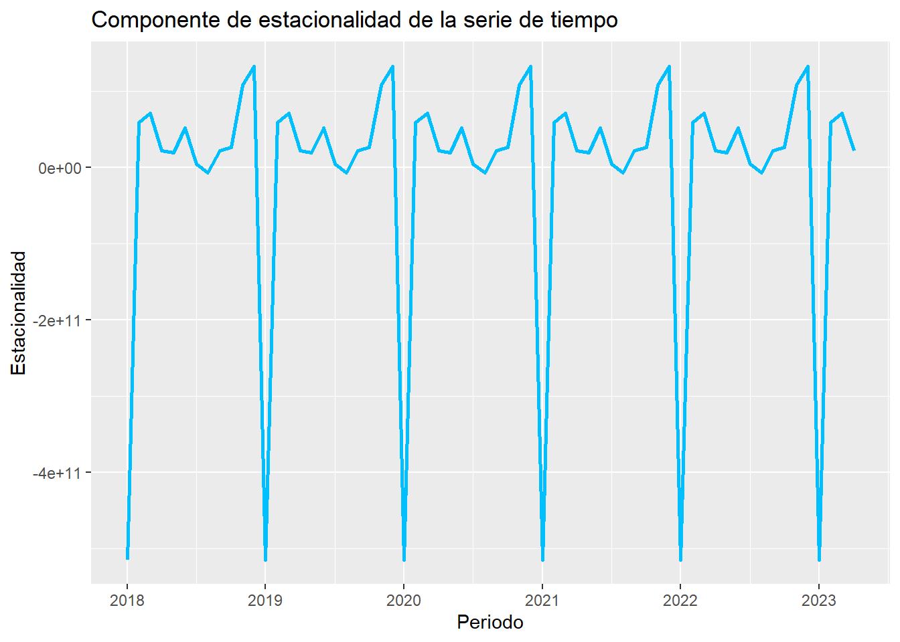
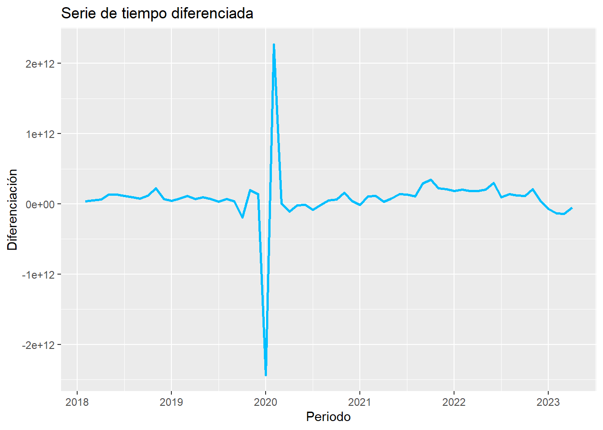

Capitulo 3 Avance 3 - descomposición, la estacionariedad y la diferenciación
3.1 Estacionalidad
library(forecast)
library(timsac)
library(ggplot2)
library(changepoint)
library(readxl)
ggseasonplot(x = indice.ts,
main= "Estacionalidad")
3.2 Ahora, hagamos una decomposicion del objeto y la graficamos para su analisis
 David
David
##################### descomposicion
# Descomponer la serie de tiempo en sus componentes
descomposicion <- decompose(indice.ts)
# Obtener la componente de estacionalidad
estacionalidad <- descomposicion$seasonal
# Convertir la componente de estacionalidad a un data frame
df_estacionalidad <- data.frame(periodo = time(estacionalidad), valor = estacionalidad)
# Graficar la componente de estacionalidad
ggplot(df_estacionalidad, aes(x = periodo, y = valor)) +
geom_line(color = "deepskyblue", size = 1) +
xlab("Periodo") + ylab("Estacionalidad") +
ggtitle("Componente de estacionalidad de la serie de tiempo")## Warning: Using `size` aesthetic for lines was deprecated in ggplot2 3.4.0.
## ℹ Please use `linewidth` instead.
## This warning is displayed once every 8 hours.
## Call `lifecycle::last_lifecycle_warnings()` to see where this warning was
## generated.## Don't know how to automatically pick scale for object of type <ts>. Defaulting
## to continuous.
## Don't know how to automatically pick scale for object of type <ts>. Defaulting
## to continuous.
##################### diferenciación
# Calcular la diferenciación
diferenciacion <- diff(indice.ts)
# Convertir la serie de tiempo diferenciada a un data frame
df_diferenciacion <- data.frame(periodo = time(diferenciacion), valor = diferenciacion)
# Graficar la serie de tiempo diferenciada utilizando "ggplot2"
ggplot(df_diferenciacion, aes(x = periodo, y = valor)) +
geom_line(color = "deepskyblue", size = 1) +
xlab("Periodo") + ylab("Diferenciación") +
ggtitle("Serie de tiempo diferenciada")## Don't know how to automatically pick scale for object of type <ts>. Defaulting
## to continuous.
## Don't know how to automatically pick scale for object of type <ts>. Defaulting
## to continuous.